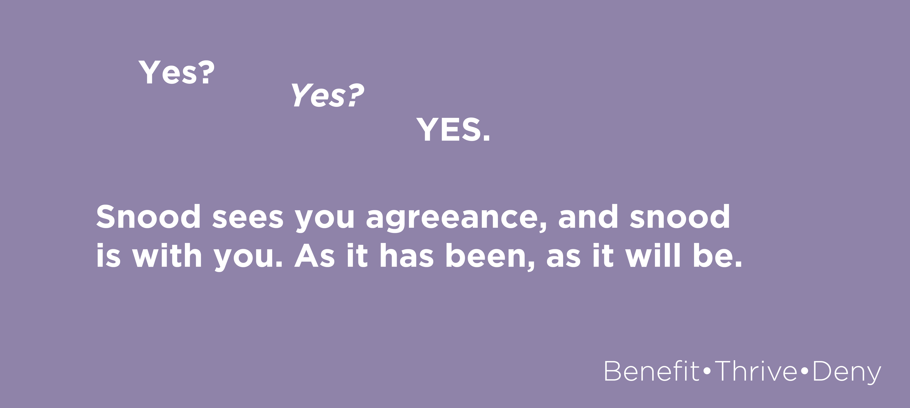

A common misconception made by the snoods followers is that the snood needs to benefit from you or there will no longer be a snood. This is false. The snood started the cycle of the snood not because it needed it, but because it was a kind and compassionate snood. It is constantly thinking about others and how it can help others. To benefit from the snood is a great, great privilege that not many can say they have delved into. We all should have the privilege to benefit from the snood but not all of us can accept the fact that we in turn need the snood. Our lives as of current will never have meaning, but you can change that by benefiting from the snood. Join today, JOIN, JOIN JOIN. As it has been, as it will be.
You might still be wondering what the snood can give to you. If you are a follower of the snood, a good and benefiting follower. Than you will be bestowed with an afterlife in the HAT. The hat provides eternal life for all that followed the snood. You wouldn't want to live in the sock eternally would you? It would be awful to just be a toe in the sock wouldn't it? Your entire purpose is to join the snood. YOU ARE HERE TO JOIN THE SNOOD. The snood is here for YOU to join it. It will always be here, it is the only way towards eternal life. Life after life, LIFE AFTER LIFE. As it has been, as it will be..